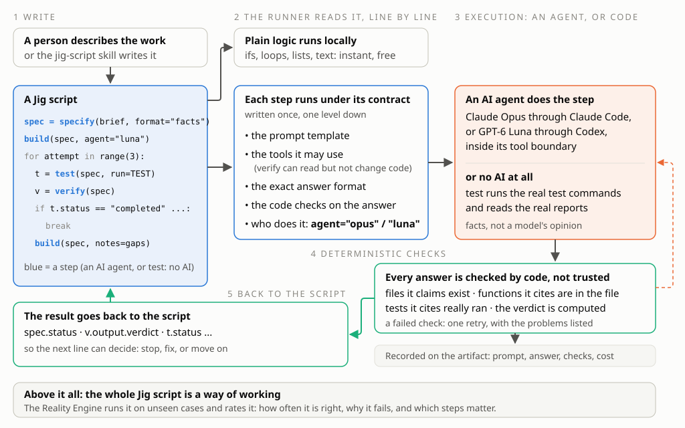
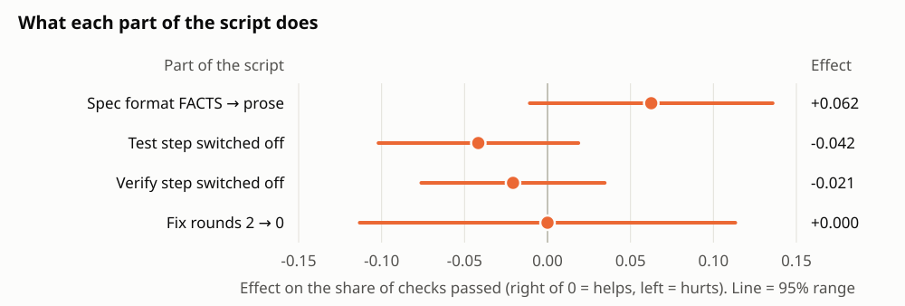
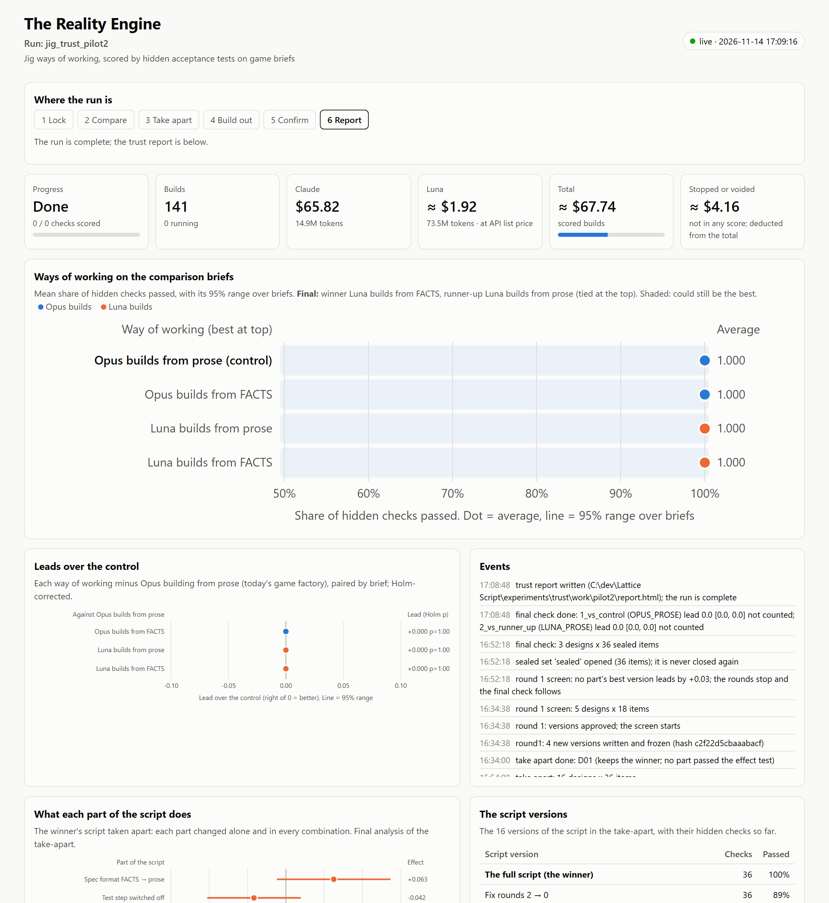
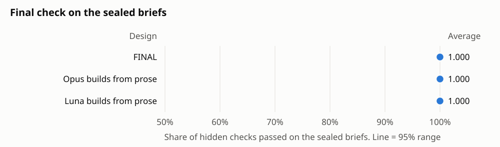

Summary
A biologist explaining how a heart pumps does not talk about quantum physics. Quantum physics is not wrong, and every heartbeat depends on it, but at the level of cells, muscles and blood its detail is summed up in a few reliable rules. Every mature field controls complexity this way: it works at a level of description with its own vocabulary, and trusts that level only as far as it has been measured to hold.
The thesis. The machinery for AI work is now strong: orchestration frameworks, agent teams, and harnesses with deterministic hooks. What is missing is a level above it. The way of working is spread across prompts in code, tool rules in configs, checks in hook scripts and coordination in agent messages, so it is hard to read as a whole, every change touches the plumbing, success is often the agent's own report, and the process is rarely a unit precise enough to be compared, repeated or measured. To happen reliably at scale, AI work needs a dedicated layer of abstraction that lifts the definition of the work above the mechanics of executing it, checks every claim before it is used, and treats measurement at scale as a property of the layer rather than an afterthought. Measurement needs a unit to measure: only once a way of working is a precise, versioned definition can it be run on many cases, compared with another, taken apart and rated.
The layer, in practice. Jig is a small language built on this thesis. A person writes a Jig script: not orchestration code, but a short composition of steps (specify, build, test, verify, or ones they define); each step is a contract written once, one level down, holding its prompt, its permitted tools, the exact shape of its answer and the checks on that answer. The syntax is small and documented (the Jig guide, the language reference), and nobody has to learn it first: a Claude Code skill writes a Jig script from a plain-language request and checks it before anything runs (Appendix A).

A short experiment. To show the thinking end to end, one way of building software was defined in Jig and measured on unseen cases (section 07): four variants on six hard briefs, the Jig script taken apart step by step, and a sealed final check, all scored by hidden tests no builder saw. The way of working held: 36 of 36 sealed checks right, with a small, cheap model matching a strong one at about a thirtieth of the build cost. That confirms what is largely expected for simple, well-specified builds; it is offered as an illustration of working at the higher level, not as a new capability.
01Working in the weeds
Modern AI agents are capable, and the tooling around them has grown sophisticated. Teams no longer rely on a single prompt in a single window. Developers run parallel agent teams and swarms that claim tasks from shared boards and message one another as work progresses. They wire up harnesses with deterministic hooks that run linters and tests on every tool call, and they use graph frameworks to manage durable, multi-agent state (section 09).
All of this works—if you are willing to build and maintain the machinery. What is still missing is an easy way to define and consume the high-level process itself without living inside the plumbing.
Today, even with strong frameworks and hooked harnesses, the actual way of working is usually spread across several places at once: prompts inside Python nodes, tool rules inside harness configs, verification logic inside hook scripts, and coordination inside agent-to-agent chatter. That creates three practical problems:
- Hard to read and share. A teammate—or a non-programmer—cannot look at one short artifact and see the whole process: which steps happen, in what order, who does each, and what checks gate the next step.
- Hard to change cleanly. Swapping a stronger model for a cheaper one on a single step, or testing whether a review step actually earns its cost, means editing framework code or re-wiring harness hooks.
- Hard to measure. Because the workflow is tangled up with its plumbing—or emerges dynamically from agent chatter—it is rarely isolated as a clean, fixed unit. Eval tools can run a pipeline over a fixed dataset, but the way of working itself is seldom the thing rated on unseen cases under rules set in advance.
Every mature engineering discipline solves this the same way: it hides the machinery behind a clean, high-level interface so people can focus on what process they want to run, not how the pipes are connected.
02Levels of description
Every mature field handles complexity the same way. Anderson made the argument for science: each level has its own laws, and knowing the level below does not remove the need for them (Anderson, 1972). Software engineering made the same move with layered systems and information hiding (Dijkstra, 1968; Parnas, 1972), and with contracts that say what a component promises (Meyer, 1992).
| Field | Lower level | Higher level | What the higher level says |
|---|---|---|---|
Science | Quantum physics | Chemistry, then biology | "This enzyme speeds up this reaction" |
Computing | Transistors, machine code | Programming languages | "Sort this list" |
Engineering | Material behaviour | Components with ratings | "This bolt holds 10 kN" |
AI work, with Jig | Prompts: their wording, tool permissions, tokens, models, and the agent's own account of what it did | A Jig script, whose steps call the prompts and whose results are checked by code | build(spec), verify(spec), for brief in briefs: … |
AI work, measured | One run of a Jig script | A way of working, rated on unseen cases | "Right on 36 of 36 unseen briefs": a rating, like the bolt's |
Three properties make a level useful: its own vocabulary; hidden detail, summed up rather than removed, so that one can always go down a level and look; and known limits. A bolt is rated; a chemical rule holds over a range of conditions. The third property is the one most often missed, and it is the one that connects abstraction to measurement: a level is only as good as the evidence that it holds, and that evidence comes only from measuring it on cases nobody chose to make it look good.
The last two rows are the point of this paper. Following DSPy's "program, don't prompt" (Khattab et al., 2023), a person working with AI should rarely need to write prompts, much as most programmers rarely write machine code: they write a Jig script whose steps call the prompts, and they choose a way of working by its rating, as an engineer chooses a bolt.
03The layer for AI work
The unit of work at the layer is a step: one command call, executed under a contract, against a persistent record of the item being made (an artifact, with its workspace and every result so far). A Jig script composes steps and holds none of the plumbing: no prompts, no parsing, no retry code. The steps carry the mechanics.
spec = specify("Build the browser game described in the brief", brief=brief,
constraints=STACK, format="facts", agent="opus")
build(spec, test_run=TEST, agent="luna")
for attempt in range(3):
t = test(spec, run=TEST) # the real tests: no AI
v = verify(spec, agent="opus") # every requirement checked
if t.status == "completed" and all_must_requirements_met(v):
break
build(spec, notes=gaps_found, agent="luna") # a fix roundFive concerns that a prompt mixes into one string are held apart:
| Concern | Where it lives | What the layer does with it |
|---|---|---|
Intent (what is wanted) | The step's target and parameters, in the script | Validates every parameter against its declared type; reads briefs and other inputs as untrusted data, fenced and never followed as instructions |
Context (what the agent sees) | The step's prompt template, one level down | Injects only named, recorded results of earlier steps (the spec, the test results, the workspace state); refuses to run a step whose prerequisite steps have not completed |
Execution (what the agent may do) | The step's tool policy, and the agent chosen in the script ( agent="opus", agent="luna") | Has the agent's host enforce the tools the step may use: verify may read code but not change it, and build may not run docker or read system information |
Verification (how the answer is judged) | The step's answer format and checks, one level down | Accepts an answer only if it matches its schema and passes deterministic checks against the workspace and records; retries once with the findings |
Control (what happens next) | The Jig script | Runs plain logic locally; makes every agent call a visible line; caps loops and stops on a failed step unless the script handles it |
What is encapsulated, and therefore written once and changed in one place, is everything that makes a step work: its prompt, its tools, its answer format and its checks. What stays explicit, and therefore readable by anyone, is the definition of the work: which steps, in what order, with which inputs and which agent, and what to do when a check fails. A Jig script never contains a prompt or a tool permission, and unlike orchestration code it is never executed as general code: the runner interprets a small, fixed set of constructs and rejects the rest before anything runs.
04What the layer guarantees, and what it does not
A level is only worth having if its statements are reliable, so its guarantees must be stated exactly.
What is guaranteed by code, on every step. An answer that does not match its schema is rejected. A file a build claims to have written must exist. A function cited as evidence must occur in the file named. A test cited as evidence must exist in the recorded test run, and the tests themselves are run for real by a step with no model in it. A web source cited by research must appear in the agent's own search and fetch results. The overall verdict of verification is computed by a fixed rule (pass only if every must-have requirement is reported satisfied and the recorded tests passed), not taken from the agent. Every prompt, answer, check and cost is recorded.
What is not. These checks test evidence and consistency, not meaning. They catch an agent that claims work it did not do, cites code that does not exist, or reports tests that never ran; they do not catch a wrong answer backed by real evidence. The verdict's rule is fixed, but one of its inputs is still an AI judgement, the verifier's status for each requirement. Correctness rests on the tests the script's author supplies. The tool boundary is enforced by the agent's host (Claude Code's tool flags, or Codex's sandbox, which is coarser), not by Jig itself; a container sandbox exists for real isolation. And the shipped checks are shaped for building and research: a new kind of work needs new checks to get the same guarantees.
This is the honest shape of the layer: it makes fabrication and missing evidence impossible to pass on silently, and it leaves the question "is it right?" to tests and to measurement. That is exactly why measurement belongs inside the abstraction rather than after it.
05Scale
Lifting the process above the plumbing is what makes the work scale. It answers the three problems of section 01: the work becomes readable by many people, runnable across many items (which is also what measuring it needs), and changeable without disturbing what sits above it.
- Many items. One script serves any number of items. A batch runs it for every row of a list, in parallel, each item in its own process and folder, with a summary of status, time and cost per item, and a resume that skips what is done.
- Many people. A script reads as a description of the work, so it can be reviewed, shared and repeated. People who do not write code describe the work in plain language and a skill writes the script; the contracts underneath stay the same.
- Change without disturbance. The model behind a step, the wording of its prompt or the strictness of its checks can change underneath while every script above stays the same, and the agent for a step is a single word in the script.
06Knowing the level holds: measurement as part of the layer
Abstraction without measurement is a convenient story of unknown accuracy. The layer is designed so that measurement at scale is possible by construction:
- A precise unit. A way of working is a set of plain files (a script and the step definitions it uses) with a fixed agent per step. Two ways of working differ in named, versioned ways, so everything else can be held fixed while one thing changes.
- A record of every run. Every step leaves the same structured record: its inputs, its prompt, the agent's events, its validated output, its check findings and its cost. Results are comparable across items, runs and versions without any extra instrumentation.
- Repeatable runs. The same script runs unchanged on any list of items, in parallel, with any agent per step, and resumes where it stopped.
What the layer does not contain is the statistics. Rating a way of working, how often it is right on unseen cases, with what uncertainty, and which of its parts that depends on, is done by an instrument built for it. This paper uses the Reality Engine, which tests AI systems "the way science tests ideas": every option on the same unseen cases, rules locked in advance, a sealed final check, and corrections that allow for luck among many candidates. The layer supplies the unit and the records; the instrument supplies the rating. Together they close the loop from generating work to measuring it: define a way of working, run it at scale, rate it on unseen cases, and keep or change it on the evidence.
07A short experiment
One way of building software was defined in Jig and measured end to end. A brief describes a small browser game and the functions its rules must live in; the script has Claude Opus write the spec, a builder write the code, the real tests run, Opus verify every requirement, and up to two fix rounds follow. Each finished game was scored by six hidden acceptance checks, copied in only after the build. Four variants were compared on six hard briefs (poker hands, Reversi, checkers, Go capture rules, cribbage counting, chess move legality): the builder reading the spec as prose or as compact FACTS notes, built by Claude Opus or by the small, cheap GPT-6 Luna. Appendix B gives the method, the honesty rules and every result.
Every variant got every check right: 144 of 144. The difference was in the work it took: Opus never needed a fix round; Luna needed fix rounds on 4 of its 12 builds before every check passed.
Taking the script apart showed which steps carried that reliability. The winning variant (Luna, FACTS) was built in sixteen versions, with the test step, the verify step and the fix rounds each switched off, alone and in every combination:
| Script version (Luna building) | Spec as FACTS | Spec as prose |
|---|---|---|
Full script (every step on) | 100% | 100% |
Test step and verify off | 78% | 100% |
No fix rounds | 89% | 100% |
Test step, verify and fix rounds all off | 86% | 100% |

With a FACTS spec, the small builder's reliability rested on the script's own checks and fix loop; with a prose spec it held without them. No step's effect was proven at this size (every range crosses zero), so the full script was kept. On six sealed briefs, opened once, the final design passed all 36 checks, as did the strong-model control. With every case passing, the honest statement is a bound: the true rate is very likely above about 90 percent per check and above about 54 percent per brief (exact two-sided 95% Clopper–Pearson bounds). A game cost about $0.52 the small model's way and about $1.00 the strong model's way; the build step itself about a thirtieth.
What it shows. On small, well-specified builds the layer held completely, which is largely what one would expect today; the experiment confirms it rather than discovering it. Its value is as a demonstration of the thesis: a way of working defined precisely enough to be run, varied, taken apart and rated, so that a question such as "which of these steps actually matters?" has an answer with a range instead of an opinion. The pattern it found is a lead to follow, not a result. Finding where a way of working breaks, on harder and messier work, is what the layer makes possible next.
08Where this goes
Harder work. Only when a way of working sometimes fails can its parts be shown to matter and its rating tell a good method from a lucky one: briefs written by others, several interacting modules, ambiguous requirements, changes to existing code, interfaces left open, the same work run several times to measure consistency.
Experts as agents. Some quality cannot be captured by a test: whether a memo is wise, a design usable, an answer fair and safe. Having experts check AI output in bulk does not scale, and at this layer it is mostly unnecessary: code checks catch fabrication on every output, tests score what can be tested, and measurement needs only a few hundred unseen cases. The expert's job moves from checking every output to setting the exam: writing acceptance criteria and tests, calibrating any AI judge, and auditing samples. Human review is already wired into agent tools (HumanLayer; LangGraph's interrupts) and sold at scale by annotation firms. A natural next step is to make a pool of human experts one more kind of agent at the layer, agent="experts": the same step, the same rubric and the same answer format, done by several qualified people whose agreement is measured and recorded like any other step. The script decides what goes to them:
| Send to experts when | Because |
|---|---|
The cheap checks disagree, or the AI verifier is unsure | The automatic layers conflict, and a person resolves it |
The work is high-stakes (medical, legal, financial) | The cost of an error justifies the cost of a person |
A small random sample, for example 2 to 5 percent | Keeps the automatic layers honest over time |
A new way of working, before it is trusted | Builds the evidence that decides how much sampling it needs later |
Measurement then decides where people are spent: a way of working rated right 99 percent of the time on unseen cases needs light sampling; one at 70 percent needs heavy review or a better design. This is a direction, not a result: no expert pool is built, and a design note in the Jig repository (docs/design/expert-agents.md) sketches how it would work.
09Related work
The table places the layer among existing approaches along the dimensions that matter to this thesis. The other rows describe each approach's general design as its own documentation presents it; each is broader than one row can show. The last row lists only what Jig's code implements.
| Approach | Abstraction layer (vs. orchestration scripts) | Deterministic boundary | Context and state isolation | Measurement and evaluation at scale | Bottleneck addressed |
|---|---|---|---|---|---|
Raw prompting, orchestration scripts | None: the prompt and the plumbing are the work | None beyond whatever the script parses | Conversation history or script variables, managed by hand | Manual: demos and spot checks | Getting a capable model to do a task at all |
DSPy (Khattab et al., 2023) | Modules with typed signatures, composed in Python | Typed input and output fields | Program variables | Built in for optimisation: prompts are compiled against a metric on an evaluation set | Brittle, hand-written prompts in multi-step programs |
LangGraph and agent frameworks (LangChain, 2024) | Nodes and edges of a stateful graph, in code | Code-defined control flow and a state schema | Shared graph state, checkpointed and persisted | Not part of the graph; tracing and evaluation are separate tools | Durable, resumable, long-running agent control flow |
MCP (Anthropic, 2024) | A protocol for tools, resources and prompts served to a model | A JSON Schema for each tool's input | Resources fetched by the host for the model | Not in scope | Connecting many tools and data sources to many models |
Skills and procedural SOPs (Anthropic, 2025; Hong et al., 2023) | Packaged instructions, sometimes with scripts, loaded into context | Mostly guidance the model follows; some hosts let a skill pre-approve or remove tools | Loaded into the model's context on demand | Not built in | Missing or inconsistent know-how and procedure |
Abstraction for AI Work (Jig) | A Jig script of steps, each run under a contract; prompts, tool permissions, answer formats and checks live one level down, in the contract | Per step: tool policy enforced by the agent host, an output JSON Schema, deterministic checks of evidence (not meaning), a test step with no model, a verdict computed by a fixed rule. Per Jig script: a fixed syntax, loop, step and size limits | A persistent artifact per item (manifest, append-only step outputs, its own workspace); context injected only from named results recorded on the artifact; untrusted inputs fenced; each batch item in its own process and folder | Every way of working is a versioned definition; every step leaves a structured record of output, check findings and cost on its artifact; batches run a Jig script over many items in parallel with per-item summaries. Being rated on unseen cases, with ranges, needs an external instrument, here the Reality Engine | Unverified self-reported agent success, unbounded tool use, and work that cannot be compared, audited or measured |
Closest in spirit is DSPy, which also lifts AI work above the prompt and builds evaluation into the loop; it optimises prompts against a metric, where this layer checks each claim against the workspace and keeps the work's definition explicit for people. MetaGPT and ChatDev organise agents into roles and fixed procedures, MetaGPT's SOPs and ChatDev's chat chain (Hong et al., 2023; Qian et al., 2023), and AutoGen and OpenAI's Swarm let peer agents converse and hand off work (Wu et al., 2023; OpenAI, 2024); Reflexion and Self-Refine let a model correct itself from written feedback: its own critique, or its reflection on outside signals such as test results (Shinn et al., 2023; Madaan et al., 2023); here the feedback is tests that really ran and a verifier's cited gaps. HumanEval and SWE-bench score code by tests (Chen et al., 2021; Jimenez et al., 2023), and SWE-agent shows the interface shapes the result (Yang et al., 2024); most leaderboards rank models, and some, such as HAL (Kapoor et al., 2025), also compare agent designs. The aim here is to make a team's own way of working, on its own unseen cases, the thing rated. Appendix D compares the families in detail, with a checklist of features.
Appendix AJig: use it yourself
A.1 The syntax, and a skill that writes it
Jig's syntax looks like Python but is its own small language: command calls (each one a step that calls an AI agent or a procedure), variables, if, for and while, lists, maps, queues and sets, and a handful of builtins. It is never run as Python: the runner interprets it, and imports, functions and anything not on its list are rejected before anything runs.
- The Jig guide: the language and every command from the beginning, for people who have not written code.
- The language reference: every statement, operator, data type and builtin.
- Commands: how a step is defined (its prompt, tool policy, answer format and checks) and how to add your own.
- Architecture: what the code enforces and where its boundaries are, claim by claim.
People do not need to learn the syntax to use Jig. The repository includes a Claude Code skill, jig-script, that turns a plain-language request ("build these three games from the briefs in a folder, check every requirement and fix what fails") into a commented Jig script, writes any batch file or new step the request needs, and checks the result offline (every command exists and every parameter is one it accepts) before anything is run.
A.2 FACTS notes in a spec
With format="facts", specify also writes the spec as FACTS notes, the final design chosen in the Reality Engine's case study: one short fact per line under THINGS, VALUES, RULES, LINKS and TIMING. The build step then reads the notes instead of the prose spec, and Jig checks that the notes have all five headings and name every requirement.
## THINGS
- logic: src/logic.ts
- Game: { board: Cell[]; turn: Mark }
## VALUES
- board.length: 9
- board.order: row by row, index 0 = top leftA.3 The experiment's script
Every version in the experiment ran this script (experiments/trust/jig_trust/trial.jig, shortened); the engine changed only the variables format, builder, tests, verify_step and max_fixes.
spec = specify(f"Build the browser game described in the brief ({id})", brief=brief,
constraints=STACK, id=id, format=format, agent="opus")
if spec.status != "completed":
fail(f"{id}: specify failed")
b = build(spec, test_run=RUN, agent=builder)
for attempt in range(max_fixes + 1):
tests_ok = true
if tests == "on":
t = test(spec, run=TEST, expect_files=["dist/index.html"])
tests_ok = t.status == "completed"
verify_ok = true
gaps = []
if verify_step == "on":
v = verify(spec, agent="opus")
for item in v.output.items:
if item.status != "satisfied":
gaps.append(f"{item.id}: {item.notes}")
if item.id in musts:
verify_ok = false
if (tests_ok and verify_ok) or attempt == max_fixes or len(gaps) == 0:
break
build(spec, test_run=RUN, notes="; ".join(gaps), agent=builder)Appendix BThe experiment in full
B.1 Method
Ways of working. OPUS_PROSE (the control: Opus builds from the prose spec, as the game factory works today), OPUS_FACTS, LUNA_PROSE and LUNA_FACTS. Claude Opus always wrote the spec and did the verifying; the stack, the test commands and up to two fix rounds were the same for all.
Items. Eighteen briefs, each asking for a playable game with its rules as named functions in src/logic.ts, each with six hidden acceptance checks: six hard briefs for the comparison and take-apart; three to screen and three to confirm in build-out (sliding puzzle, sea battle, towers; number grid, peg jump, five-letter word guess); and six sealed (the game of life, a code breaker, a box pusher, blackjack, lights out, dice poker). The six checks of a brief share one build and form a cluster, so ranges resample briefs, not checks. A check scores 1 if it passes; a build that failed or produced no logic scores 0 on all six. The user interface is not scored.
Stages. Compare the four; take the winner's script apart (spec format, test step, verify step, fix rounds; sixteen versions); build out (a designer, Claude Opus with no tools and only scores and counts in view, writes new versions of an extra spec rule and extra builder notes, screened on fresh briefs); confirm the best design against the control and the runner-up on the sealed briefs, opened once.

B.2 How it was kept honest
- Locked before any build. The plan, the engine and the pack's code were fingerprinted at 15:03 on 14 November 2026 (lock
2660f8ee5c4e8f2f) and committed before the first build. The pack also fingerprints every brief, hidden test, reference implementation and the script (frozen.py) and refuses to start if any has changed. - Hidden tests proven first. All 144 hidden tests of all 24 briefs written pass on reference implementations (
check_references.py). - The builder never sees the exam. Hidden tests are copied in only after the pipeline finishes; any build whose agent logs mention them is void.
- Failures count; nothing is deleted. Every voided build and record is kept, renamed, with its reason.
- After the lock. Two further entries in the lock log: at 15:12, builds run at once raised from 5 to 10 (operational; the builds in flight were stopped before scoring and rebuilt); at 15:54, a fix after a hash collision gave two take-apart versions the same game folder (both versions' builds and 13 engine records voided and rebuilt; nothing else affected).
- Pilot 1, an earlier run on easier briefs, is kept as a dry run, not a result: it showed the path working and a ceiling, and its lessons (fix the design before the lock; never change files a running engine reads) shaped this run. Its sealed briefs were never opened and are this run's sealed set.
- One author. The author wrote the briefs, the tests and the pipeline, and saw one live wiring test before the lock; nothing was tuned on it.
B.3 The run
| Time (14 Nov 2026) | Event |
|---|---|
15:03 | Plan locked and committed; comparison starts |
15:28 | Comparison done: every way of working 36 of 36; winner Luna from FACTS on the tie-break |
16:34 | Take-apart done: no part passed the effect test; the full script kept |
16:52 | Build-out screen done: no new version led by the required +0.03; sealed set opened |
17:08 | Final check done; trust report written |
141 games built and 918 hidden checks scored across 22 designs, on one workstation, up to ten builds at once.

B.4 Results

| Script version (Luna building) | Spec as FACTS | Spec as prose |
|---|---|---|
Full script | 100% | 100% |
Test step off | 94% | 100% |
Verify step off | 94% | 100% |
Test step and verify off | 78% | 100% |
No fix rounds | 89% | 100% |
Test step off, no fix rounds | 100% | 92% |
Verify off, no fix rounds | 100% | 100% |
Test step, verify and fix rounds all off | 86% | 100% |
| Part changed | Effect | 95% range | p |
|---|---|---|---|
Spec format FACTS → prose | +0.062 | −0.011 to +0.136 | 0.08 |
Test step switched off | −0.042 | −0.102 to +0.019 | 0.14 |
Verify step switched off | −0.021 | −0.076 to +0.035 | 0.38 |
Fix rounds 2 → 0 | 0.000 | −0.113 to +0.113 | 1.00 |
Build-out. The designer's four versions (every rule as a named function with worked edge cases; a deterministic, seedable core with numbered checkable requirements; one test per rule before the interface; a final re-check of every rule and edge case) and the current best all passed every check on three fresh briefs, so the rounds stopped.

| Trust report | Answer |
|---|---|
How often it is right | 100% of 36 sealed checks on 6 briefs; the reported range [100%, 100%] overstates the certainty: the exact two-sided 95% Clopper–Pearson lower bound is about 90 percent per check and about 54 percent per brief |
Reliability | Every run finished without a design failure |
Why it fails | No failures on the sealed briefs |
Verdict | Luna from FACTS, full script; equal to the control and the runner-up (leads 0, not counted) |
How hard we looked | 4 ways of working, 8 new versions, 22 designs built, 918 scored checks, 4 stages; 0 changes kept |
Headroom | Best unproven change: the spec as prose (+0.062, −0.011 to +0.136) |
B.5 Cost
| Usage | Tokens | Cost |
|---|---|---|
Claude Opus (specs, verification, Opus builds), as reported | 14.9 million | $65.82 |
GPT-6 Luna (Luna builds), at OpenAI's list price | 73.5 million (67.1 M cached) | ≈ $1.92 |
Stopped or voided work (never scored) | ≈ $4.16 | |
Total | ≈ $71.90 |
A game built the control's way cost about $1.00 and took 4.4 minutes; the final design's way about $0.52 and 7.6 minutes, fix rounds included. Luna ran on a ChatGPT subscription and Opus on a Claude subscription; the dollar figures are what the same tokens cost at API list prices.
B.6 Limits
- A ceiling. Nearly every version passed nearly every check, so the comparison could not separate the ways of working and the take-apart could not prove any step's worth. Simple, well-specified builds are already reliable.
- Size. Six briefs per stage can show only large differences.
- Logic, not play; briefs that state their interface; a sealed set easier than the comparison set; one author; only the winner taken apart; each brief built once; a coarser tool boundary for Luna under Codex.
Appendix CThe data and the code
- Jig: github.com/runcor-ai/jig; what it enforces, claim by claim:
docs/ARCHITECTURE.md. - The experiment's pack (
experiments/trust/jig_trust/): the 24 briefs, hidden tests, reference implementations, the script,frozen.pyandpack.py;check_references.pyproves the hidden tests. - The runs (
experiments/trust/work/pilot2/, and the dry runpilot1/): lock logs, every decision as an event, every record (voided ones kept), the analysis and the trust report. - The dashboard (
experiments/trust/dashboard/): a read-only view of a run, with usage and cost. - The Reality Engine: github.com/LLMJester/reality-engine, run unchanged.
Appendix DRelated work in detail
The full comparison behind section 09: each family of related work, with example work, what it abstracts, how it checks output and measures, and how this work differs; then a checklist of 16 features.
| Approach | Example work | What it abstracts | How output is checked | Measurement | How this work differs |
|---|---|---|---|---|---|
Raw prompting and ad-hoc scripts | Chat use; hand-written scripts calling a model API | Nothing: the prompt and the plumbing are the work | Whatever the script parses, or a person reading the output | Demos and spot checks | The baseline this paper argues against: the definition of the work is mixed with its mechanics |
Pipeline optimisation | DSPy Khattab et al., 2023 | Modules with typed signatures in a Python program | Typed fields; metrics and output checks (Refine, BestOfN) written by the developer | Built in: prompts and examples compiled against a metric on an evaluation set | The closest in spirit. DSPy optimises prompts against a metric; this layer keeps prompts fixed, checks each claim against the workspace, and leaves the rating to a separate instrument |
Graph and agent frameworks | LangGraph LangChain, 2024 | Nodes and edges of a stateful graph, in code | Code in the nodes; a state schema; human interrupts at chosen nodes | Separate tools for tracing and evaluation | Control flow lives in general code with prompts inside the nodes; here the work is a restricted script and the prompts live one level down |
Role-based and peer multi-agent teams | MetaGPT Hong et al., 2023; ChatDev Qian et al., 2023; AutoGen Wu et al., 2023; Swarm OpenAI, 2024 | Roles and fixed procedures (MetaGPT's SOPs, ChatDev's chat chain) handing documents to each other, or peer agents that message each other and hand off tasks | Other agents' reviews, plus running the code and feeding back errors | Benchmarks, with ablations of roles in the papers | Agents check agents; here code checks agents, and the procedure is a readable script rather than a fixed company of roles |
Self-correction | Reflexion Shinn et al., 2023; Self-Refine Madaan et al., 2023 | A loop of attempt, feedback and retry | Written feedback: the model's own critique (Self-Refine), or its reflection on outside signals such as test results (Reflexion, which can write its own tests) | Benchmarks, with ablations | Here the feedback in a fix round is tests that really ran and a verifier's cited gaps, and the loop is visible in the script with a fixed cap |
Tool protocols | MCP Anthropic, 2024 | Tools, resources and prompts served to any model | A JSON Schema for each tool's input; the host should get approval for calls | Not in scope | A layer below this one: it connects tools; it does not define, check or measure work |
Skills and procedural guidance | Agent Skills Anthropic, 2025 | Packaged instructions, sometimes with scripts, loaded into context on demand | Mostly guidance the model follows; some hosts let a skill pre-approve or remove tools | Not built in | Guidance the model may follow; here a contract the runtime enforces. Jig uses a skill only to write scripts |
Coding agents and benchmarks | SWE-agent Yang et al., 2024; SWE-bench Jimenez et al., 2023; HumanEval Chen et al., 2021 | An agent-computer interface; a fixed set of test tasks | Real tests run on the result | Held-out benchmark scores, with interface ablations | They rate models on public tasks; this layer makes a way of working the thing that is defined, varied and rated |
Spec-driven development | Spec Kit GitHub, 2025; Kiro AWS, 2025 | Specifications, plans and task lists that guide a coding agent | The agent and the developer, with tests where written | Not built in | Specs guide one agent session; here the spec is one recorded step among checked steps, and the whole procedure is scripted and repeatable |
This work | Jig, this paper | A restricted script of contracted steps; prompts, tools, answer formats and checks one level down | Schema, evidence checks against the workspace and records, a test step with no model, a computed verdict | Versioned definitions and uniform records; ratings by an external instrument (the Reality Engine) | The reference row |
Feature checklist. Each column is one family of related work from the table above; the last column is this work. ✓ = yes, ~ = partly or only in some work, ✗ = no or not reported.
| Feature | Prompts, scripts | DSPy | Graphs | Roles | Self-fix | MCP | Skills | Benchmarks | Spec-driven | This work |
|---|---|---|---|---|---|---|---|---|---|---|
Work defined above the prompt | ✗ | ✓ | ~ | ~ | ✗ | ✗ | ~ | ✗ | ~ | ✓ |
A restricted language for the work, never run as general code | ✗ | ✗ | ✗ | ✗ | ✗ | ✗ | ✗ | ✗ | ✗ | ✓ |
Every step's answer must match a schema | ✗ | ✓ | ~ | ~ | ✗ | ~ | ✗ | ✗ | ✗ | ✓ |
Tool limits per step, enforced outside the model | ✗ | ✗ | ~ | ✗ | ✗ | ~ | ~ | ~ | ✗ | ✓ |
Claims checked against evidence (files, functions, tests, sources) | ✗ | ~ | ✗ | ✗ | ✗ | ✗ | ✗ | ✗ | ✗ | ✓ |
Tests run with no model, feeding a computed verdict | ✗ | ~ | ~ | ~ | ~ | ✗ | ✗ | ✓ | ~ | ✓ |
Agent chosen per step without changing the work | ✗ | ✓ | ✓ | ~ | ✗ | ~ | ✗ | ~ | ~ | ✓ |
A persistent record per item, with resume | ✗ | ✗ | ✓ | ~ | ✗ | ✗ | ✗ | ~ | ~ | ✓ |
Untrusted inputs fenced as data | ✗ | ✗ | ✗ | ✗ | ✗ | ✗ | ✗ | ✗ | ✗ | ✓ |
One definition run over many items in parallel | ~ | ~ | ~ | ✗ | ✗ | ✗ | ✗ | ✓ | ✗ | ✓ |
A uniform record of every step (prompt, output, findings, cost) | ✗ | ~ | ~ | ~ | ✗ | ✗ | ✗ | ~ | ✗ | ✓ |
Written from a plain-language request | ✗ | ✗ | ✗ | ✗ | ✗ | ✗ | ~ | ✗ | ~ | ✓ |
Optimises prompts against a metric | ✗ | ✓ | ✗ | ✗ | ~ | ✗ | ✗ | ✗ | ✗ | ✗ |
Way of working rated on unseen cases, with a range | ✗ | ~ | ✗ | ~ | ~ | ✗ | ✗ | ~ | ✗ | ~ |
Way of working taken apart step by step | ✗ | ✗ | ✗ | ~ | ~ | ✗ | ✗ | ~ | ✗ | ~ |
Human experts as a step | ✗ | ✗ | ~ | ✗ | ✗ | ~ | ✗ | ✗ | ~ | ✗ |
Ratings summarise each family's published design and the work cited for it, not every system in the family; a family can gain a feature at any release. Two of this work's partial ticks, rating a way of working on unseen cases and taking it apart, come from an external instrument (the Reality Engine) rather than from Jig itself, and have been done once, in the experiment of section 07. Human experts as a step is a direction (section 08), not built. Among the work reviewed, few systems combine a restricted language for the work, evidence checks on every step and fenced inputs; CaMeL (Debenedetti et al., 2025) comes closest, from a security angle. The price is that Jig does not optimise its prompts, which DSPy can.
References
- Anderson, P. W. (1972). More is different. Science, 177(4047), 393–396.
- Anthropic (2024). Model Context Protocol. modelcontextprotocol.io.
- Anthropic (2025). Agent Skills. Claude documentation.
- AWS (2025). Kiro. kiro.dev.
- Chen, M., et al. (2021). Evaluating large language models trained on code. arXiv:2107.03374.
- Debenedetti, E., et al. (2025). Defeating prompt injections by design (CaMeL). arXiv:2503.18813.
- Describing Reality for AI (2026). Final v0.1.0, run 5 (29–31 October 2026). therealityengine.ca/paper.
- Dijkstra, E. W. (1968). The structure of the "THE"-multiprogramming system. Communications of the ACM, 11(5), 341–346.
- GitHub (2025). Spec Kit. github.com/github/spec-kit.
- Hong, S., et al. (2023). MetaGPT: Meta programming for a multi-agent collaborative framework. arXiv:2308.00352.
- HumanLayer (2025). Human-in-the-loop tools for AI agents. github.com/humanlayer/humanlayer.
- Jimenez, C. E., et al. (2023). SWE-bench: Can language models resolve real-world GitHub issues? arXiv:2310.06770.
- Kapoor, S., et al. (2025). Holistic Agent Leaderboard (HAL). arXiv:2510.11977.
- Khattab, O., et al. (2023). DSPy: Compiling declarative language model calls into self-improving pipelines. arXiv:2310.03714.
- LangChain (2024). LangGraph. github.com/langchain-ai/langgraph.
- Madaan, A., et al. (2023). Self-Refine: Iterative refinement with self-feedback. arXiv:2303.17651.
- Meyer, B. (1992). Applying "design by contract". IEEE Computer, 25(10), 40–51.
- OpenAI (2024). Swarm (experimental; since replaced by the Agents SDK). github.com/openai/swarm.
- OpenAI (2026). GPT-6 Luna, model and pricing. developers.openai.com/docs/models/gpt-6-luna.
- Parnas, D. L. (1972). On the criteria to be used in decomposing systems into modules. Communications of the ACM, 15(12), 1053–1058.
- Qian, C., et al. (2023). ChatDev: Communicative agents for software development. arXiv:2307.07924.
- Shinn, N., et al. (2023). Reflexion: Language agents with verbal reinforcement learning. arXiv:2303.11366.
- The Reality Engine (2026). How it works. therealityengine.ca/how-it-works.html.
- Wu, Q., et al. (2023). AutoGen: Enabling next-gen LLM applications via multi-agent conversation. arXiv:2308.08155.
- Yang, J., et al. (2024). SWE-agent: Agent-computer interfaces enable automated software engineering. arXiv:2405.15793.